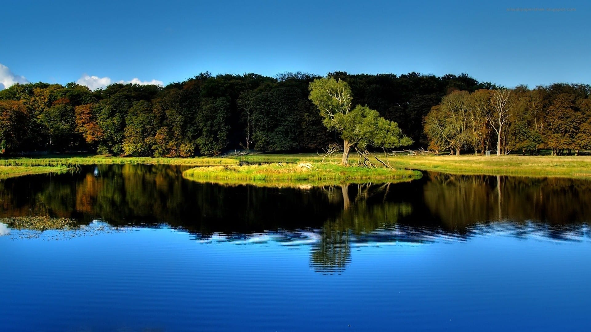
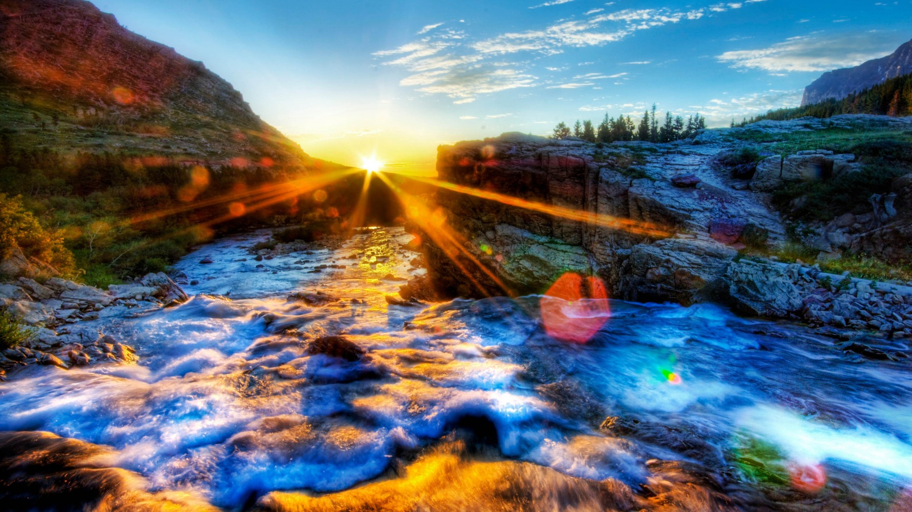

Paisaje montañas deserticas

Un desierto es un bioma de clima árido, en donde las precipitaciones son escasas. Estos suelen poseer poca vida, pero eso depende del tipo de desierto; en muchos existe vida abundante, la vegetación se adapta a la poca humedad (matorral xerófilo) y la fauna usualmente se resguarda durante el día para preservar humedad.
Paisaje montañas y lagos

Los paisajes de montaña y lagos están formados por montañas y valles. las montañas son grandes elevaciones del terreno con fuertes pendientes. Cuando tienen poca altura reciben el nombre de colina o cerro.
Paisaje de lago
Un Paisaje de lago es una imagen donde se puede contempla una gran masa de agua estamcada y un lugar maravilloso para poder disfrutar un atardecer con las personas que mas quieres y el poder disfrutar eso es una sensacion divina.
Paisaje con nieve
Un paisaje nevado es siempre una maravilla. Todo cobra un brillo y una luminosidad especial. La nieve aporta al paisaje calma y silencio y, por tanto, una atmósfera de quietud y belleza serena.